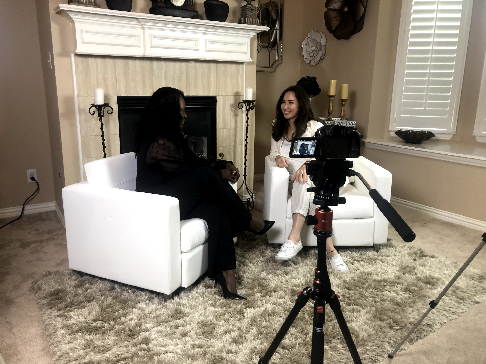
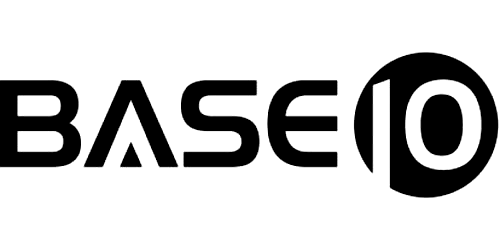
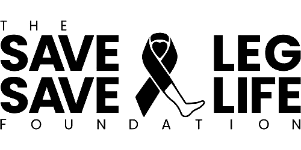
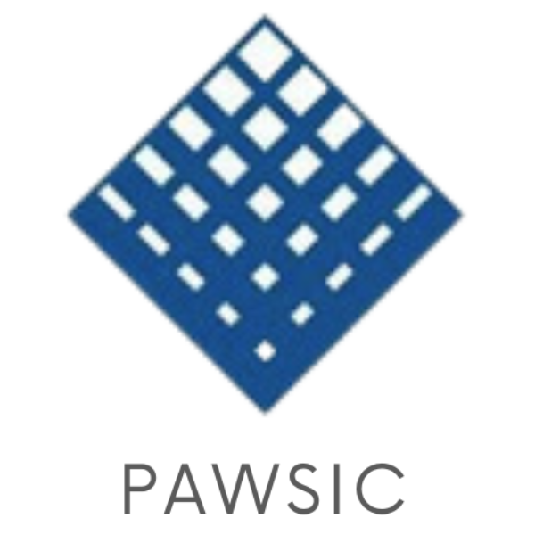
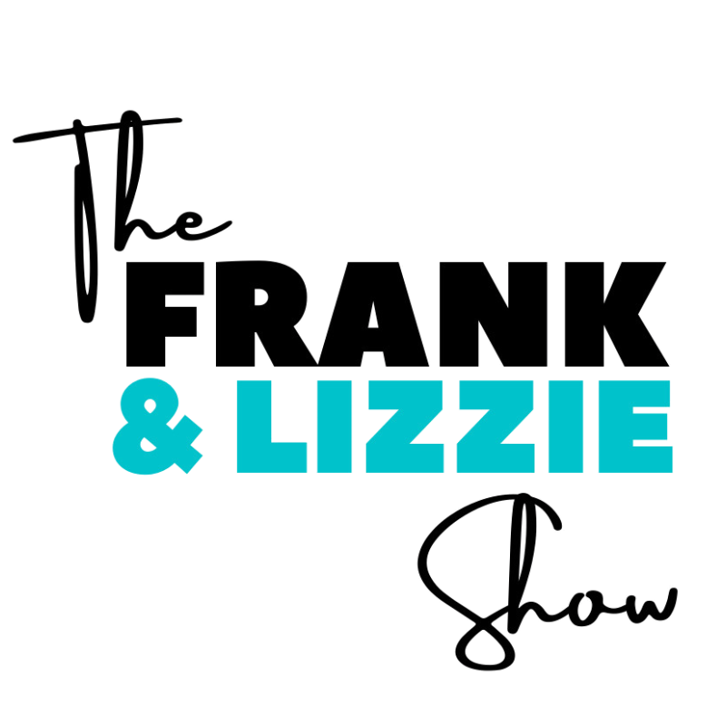
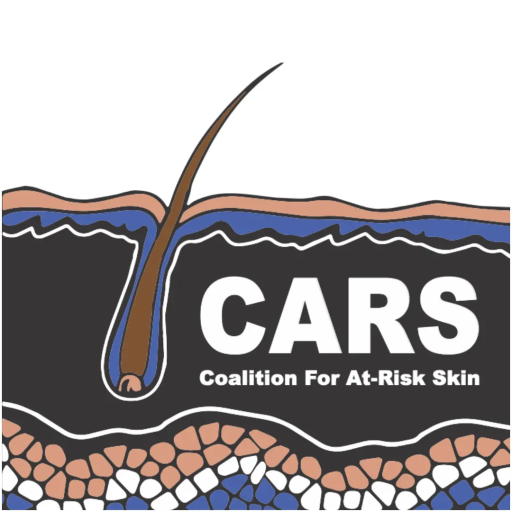

AI Strategist • Fractional CMO • Full-Stack Developer
Where technology meets purpose, and bold ideas become real results.
I'm a full-stack developer who speaks fluent marketing. An AI strategist who started in human rights. A Fractional CMO who can build the systems she recommends. That rare combination is exactly what makes the work I do different.
Get to Know Me
My story
I hold three academic degrees and a full-stack development certification . But what really sets me apart is how I connect the dots. My career spans healthcare innovation, precision medicine, education, human rights, and global marketing leadership across companies like BASE10 Genetics, the Institute of Post-Acute Care, Mary Kay, John Lewis & Partners, and EF Education First.
During COVID, I went all-in on AI and automation, training as an AI Trainer while building the systems that would become AI Powered Dahlia, my agency helping healthcare and mission-driven brands scale smarter.
Today I serve as healthcare organizations' AI and Marketing Strategist and Fractional CMO, champion women in technology, and help organizations cut their marketing workload in half through intelligent automation. Oh, and I'm also a mom and wife, because building the future and raising a family aren't mutually exclusive.
What I Bring
From custom AI agents to full marketing automation pipelines, I design systems that replace manual grind with intelligent workflows that actually scale.
C-suite marketing strategy without the C-suite price tag. I've led marketing for precision medicine, healthcare, education, and global retail brands. I bring that breadth to every engagement.
I don't just strategize. I build. Websites, web apps, AI-integrated platforms. Having a developer who understands marketing is the ultimate competitive advantage.
Where I've Been
Trusted By
Over 16 years I've led marketing, built digital systems, and driven growth for organizations across healthcare, precision medicine, education, retail, beauty, and human rights.

BASE10 Genetics
Save a Leg, Save a Life
Post Acute Wound & Skin Integrity Council
The Frank & Lizzie Show
CARS Coalition for At-Risk Skin Long Term Care RISE GAP Marks & Spencer ALDO Topshop Steve MaddenDirector of Digital Strategy & Marketing
From TEDxMarvila in Lisbon to BASE10 Genetics in precision medicine, from Mary Kay and John Lewis & Partners in global retail to EF Education First in international education, I've led digital strategy and marketing for brands that shape industries.
At the Institute of Post-Acute Care, I drove product development and marketing for healthcare certifications. At the Save a Leg, Save a Life Foundation, I built the digital presence for a healthcare nonprofit focused on limb preservation. And through Long Term Care RISE (Penn Medicine | Temple Health), I supported digital engagement for post-acute care professionals.
Today, through AI Powered Dahlia, I serve brands like Post Acute Wound & Skin Integrity Council (PAWSIC), The Frank and Lizzie Show, CARS Coalition for At-Risk Skin, Community Builders Alliance, and KeepUsPstd, helping each one scale with intelligent automation and strategy that delivers real results. I also serve as Board Vice President at Community Builders Alliance Louisiana.
Beyond strategy, I am co-founder of Wild Mercy Pictures, a Chicago-based production company telling bold, character-driven stories that blend craft with conscience: work that is emotionally honest, visually intentional, and rooted in human dignity. There, impact is not a tagline; it is the standard.
Why It Matters
My career didn't start in a boardroom. It started in human rights. At the Norwegian Helsinki Committee, I worked on monitoring, reporting, and democracy support, and participated in presenting alternative reports to the UN.
That experience shaped everything. Today, I bring that same fire to the tech industry as a woman in AI who builds, leads, and creates opportunity for others. Representation isn't a checkbox. It's a competitive advantage.
When women lead in AI, the technology we build serves everyone better. That's not just my belief. It's my daily practice.
From My Substack
The tools, strategies, and mindset shifts that separate the leaders from the laggards.
AI Strategy New
AEO & GEO
AI Agents
AI Strategy
AI Strategy
AI Strategy
AI Strategy
AI Tools & Strategy
AI Agents
AI
Career
Tech
Women in Tech
Kind Words
Frequently Asked
Dahlia Imanbay is an AI Strategist, Fractional CMO, and Full-Stack Developer with over 16 years of experience in marketing, technology, and leadership. She is the founder of AI Powered Dahlia, an agency helping healthcare and mission-driven brands scale with AI-powered marketing automation. She also serves as Director of Digital Strategy and Automation at TEDxMarvila in Lisbon, Portugal.
Dahlia specializes in AI strategy and marketing automation for healthcare organizations and mission-driven brands, Fractional CMO services providing C-suite marketing leadership, and full-stack web development. She combines technical development skills with deep marketing expertise to build intelligent automation systems that save organizations up to 50% of their marketing workload.
Dahlia holds three academic degrees and a full-stack development certification. She is also a certified AI Trainer. Her education spans marketing, business, and technology, giving her the unique ability to bridge the gap between technical development and strategic marketing leadership.
Dahlia has held leadership positions at BASE10 Genetics (VP of Marketing), the Institute of Post-Acute Care (VP of Marketing and Product Development), Mary Kay, John Lewis and Partners, and EF Education First (Country Manager, Leading Marketing and Sales). She has also consulted for the Save a Leg Save a Life Foundation and Long Term Care RISE (Penn Medicine and Temple Health). Through AI Powered Dahlia, she works with brands including Post Acute Wound and Skin Integrity Council (PAWSIC), The Frank and Lizzie Show, CARS Coalition for At-Risk Skin, Community Builders Alliance, KeepUsPstd, and more. She also serves as Board Vice President at Community Builders Alliance Louisiana. Her retail portfolio includes GAP, Marks and Spencer, ALDO, Topshop, and Steve Madden.
AI Powered Dahlia is a marketing automation agency founded by Dahlia Imanbay. The agency helps healthcare organizations and mission-driven brands scale their marketing through AI agents, automated workflows, website design, and data-driven strategy. Learn more at aipowereddahlia.com.
Dahlia serves as the Director of Digital Strategy and Automation at TEDxMarvila, a TEDx event held in Lisbon, Portugal. She established and manages the entire digital framework, including AI-powered marketing automation and scalable content systems.
Yes. Dahlia holds a full-stack development certification and actively builds websites, web applications, and AI-integrated platforms. This technical background, combined with her 16+ years of marketing experience, makes her uniquely positioned to both strategize and build the systems she recommends for clients.
Dahlia is a strong advocate for women in technology and AI. Her career began in human rights at the Norwegian Helsinki Committee, where she worked on monitoring, reporting, and democracy support, and participated in presenting alternative reports to the UN. Today she champions women in AI through her work at TEDxMarvila, her agency, and her public platform, advocating that diverse leadership in AI leads to technology that serves everyone better.
Dahlia has worked across 6+ industries including healthcare and precision medicine, education, luxury retail, beauty, international marketing, and human rights. This cross-industry experience gives her a broad perspective on marketing strategy, automation, and digital transformation.
Dahlia delivers measurable results through AI-powered marketing and project management. Jeanine Maguire, President of the Post Acute Wound & Skin Integrity Council (PAWSIC), said: "Dahlia transformed our marketing and project management approach with AI. She's not just smart, she's strategic, caring, and incredibly effective. Our engagement tripled in three months." Dahlia's approach combines AI automation with hands-on strategy to help healthcare and mission-driven organizations scale efficiently.
You can reach Dahlia through the contact form on this website, connect with her on LinkedIn, follow her on Instagram, or read her insights on Substack. For agency services, visit AI Powered Dahlia.
Get In Touch
Whether you need an AI strategist, a Fractional CMO, or just want to connect, I'd love to hear from you.
Tell me about your goals and let's explore how AI-powered strategy can help your brand grow. Fill out a quick form and I'll be in touch.
Send Me a Messageaipowereddahlia.com • Based in the US, serving clients worldwide
Read My Latest Writing • @dahliaimanbay on Substack
Subscribe on Substack →